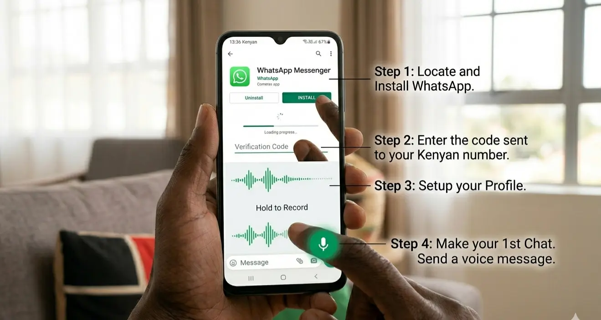
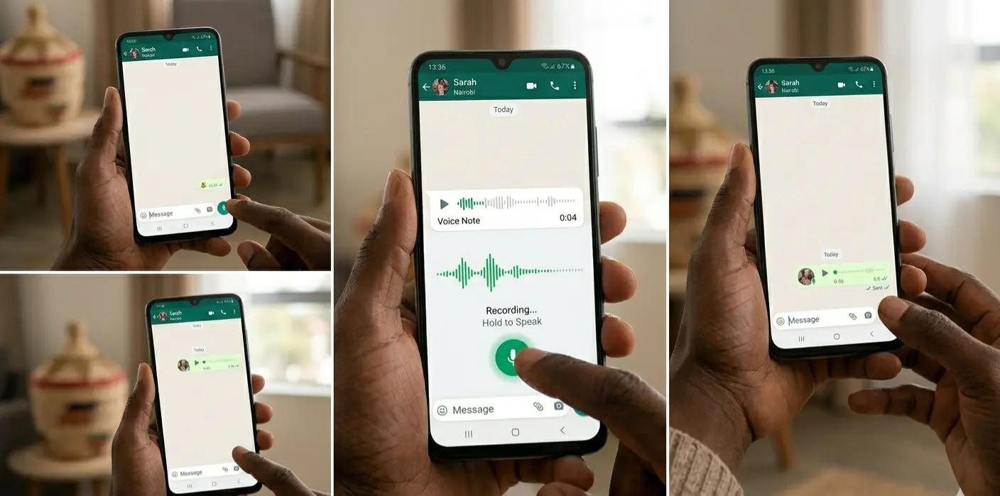
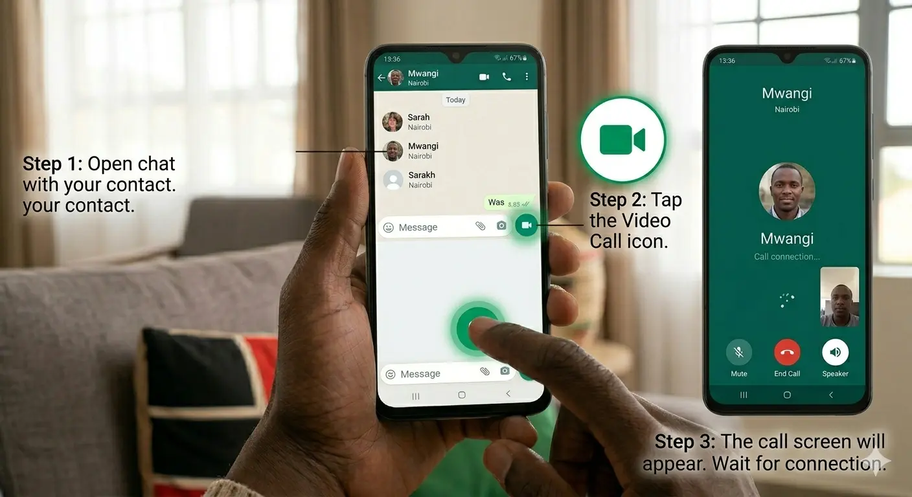
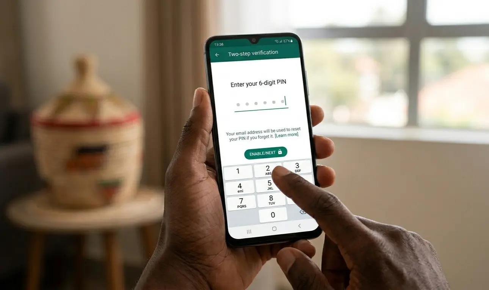

📱 Digital Literacy
WhatsApp for Seniors in Kenya: Voice Notes, Video Calls & Staying Safe in 2026
A simple, honest guide — no complicated language, no fear, just clear steps for staying connected with family and community.
✍️ Kevin Jonathan Otieno
📅 June 2026
⏱️ 11 min read
🌍 Nakuru, Kenya
KJ
Kevin Jonathan Otieno
Founder, Senior Citizens Tech Haven · Digital Literacy Advocate · Nakuru, Kenya
Helping older Kenyans navigate technology — clearly, safely, and with confidence.
⚡ Quick Answer
What is WhatsApp and how do Kenyan seniors use it? WhatsApp is a free messaging app that lets you send voice notes, make video calls, join family groups, and share photos — all using internet data instead of expensive airtime. Kenyan older adults use it to connect with grandchildren in Nairobi, join church chama groups, and coordinate family events without leaving home.
"My grandchildren are in Nairobi. I am in Nakuru. Before WhatsApp, I spent KSh 500 a month on calls just to hear their voices. Now I see their faces every Sunday afternoon — for free." — Mama Grace, 68, Nakuru.
Many Kenyan older adults have heard about WhatsApp from their children, church members, or friends. Some are already using it. Others feel nervous about getting started — worried about pressing the wrong button, spending too much data, or falling victim to a scam.
Those concerns are completely normal. And they are also completely manageable. This guide was written for you — not for technology experts, not for young people who already know everything, but for older Kenyans who want to stay connected with their families and communities without feeling confused or unsafe.
We will cover everything step by step. You do not need to learn it all at once. Start with one section today. Come back for the rest next week. Technology is simply a tool — and you are perfectly capable of learning this one.
1
Why WhatsApp Matters for Kenyan Older Adults
WhatsApp is Kenya's most widely used communication app — not just among young people, but across all generations. With over 3 billion users worldwide, it has become the digital equivalent of the village square: a place where families gather, news travels, and relationships are maintained.
For older Kenyans specifically, WhatsApp offers something valuable that traditional phone calls cannot always provide: connection without cost. Calling a grandchild in Nairobi using airtime can cost KSh 3–5 per minute. A WhatsApp voice note or call using Wi-Fi costs nothing beyond the internet connection you may already have.
What WhatsApp Allows You to Do
- Send and receive voice messages without typing a single letter
- Video call grandchildren, children, and friends — seeing their faces in real time
- Join family, church, chama, and community groups to stay informed
- Share photos of events, celebrations, and daily life
- Communicate in Kiswahili, English, Dholuo, Kikuyu, Kalenjin, or any language you prefer
- Stay connected even when family members are overseas in diaspora
Where Kenyan Culture and WhatsApp Meet
Kenyan culture is built on relationships. The values of harambee, Ubuntu, and community care are not digital concepts — they are deeply human ones. WhatsApp simply gives those values a digital home. Many older Kenyans already use it to organise harambees, coordinate school fee contributions, support bereaved families, and share church announcements.
✅ Did You Know?
Studies across sub-Saharan Africa consistently show that when older adults join WhatsApp family groups, they report feeling less lonely and more informed about family news. Connection is the greatest benefit — the technology is just the vehicle.
2
Getting Started: Setup in 4 Steps
If WhatsApp is not yet on your phone, here is exactly how to get it. Ask a grandchild or trusted family member to sit with you the first time — it helps to have someone nearby.

The four steps to getting WhatsApp on your Kenyan Android phone — install, verify, set up your profile, and send your first voice message.
1
Locate and Install WhatsApp
Open the Google Play Store (colourful triangle icon on your phone). Search for "WhatsApp Messenger." Tap Install. Wait for it to download — this takes 1–2 minutes on a good connection.
2
Enter the Verification Code Sent to Your Kenyan Number
WhatsApp will send a 6-digit code to your Safaricom, Airtel, or Telkom number by SMS. Enter it on screen. If it does not arrive in 1 minute, tap "Resend SMS."
3
Set Up Your Profile
Add your name as you want family to see it — for example, "Mama Grace" or "Baba Kamau." Add a clear profile photo so family members recognise you immediately.
4
Make Your First Chat — Send a Voice Message
Find a contact, open their chat, and send your first voice note. You do not need to type anything. Instructions for this are in Section 3 below.
💡 Senior-Friendly Tip: Make Text Larger First
Before using WhatsApp, increase the text size so everything is easier to read. In WhatsApp: Settings → Chats → Font Size → Large. On your phone: Settings → Display → Font Size → increase to your comfort.
3
Voice Notes: The Easiest Way to Communicate
If you remember nothing else from this guide, remember this: you never have to type on WhatsApp. Voice notes — spoken audio messages — are the feature that makes WhatsApp ideal for older adults. No keyboard, no spelling, no autocorrect disasters. Just speak, and your family hears your voice.

Recording a WhatsApp voice note — press and hold the green microphone, speak clearly, then release to send. No typing required.
How to Send a Voice Note
1
Open a Chat
Tap the name of the person you want to message — a family member, church friend, or group.
2
Press and Hold the Green Microphone Icon
It is at the bottom right of the chat screen. Hold it down — do not just tap once.
3
Speak Your Message Clearly
Example: "Habari mwanangu, nimefika nyumbani salama. Nitakupigia kesho asubuhi." Speak at your normal pace — there is no rush.
4
Release to Send
Lift your finger. The voice note sends automatically. You will see it appear as a green audio bar in the chat.
Why Voice Notes Are Especially Good for Older Adults
- No typing required — ideal if your fingers are stiff, have arthritis, or if the screen keyboard feels small
- Your loved ones hear your actual voice — the warmth, the laughter, the love in your tone
- Perfect for those with reduced eyesight who find reading small text difficult
- You can listen to voice notes at any time, replaying them as many times as you wish
- Voice notes use less data than video calls, making them budget-friendly
💡 Quick Tip: Made a Mistake?
If you record a voice note by mistake, slide your finger left while still holding the microphone button — this cancels the recording before it sends. You can then try again.
4
Video Calls: Seeing the People You Love
A phone call lets you hear family. A video call lets you see them. For grandparents and grandchildren separated by distance — whether across Nairobi or across continents — WhatsApp video calls create moments that matter deeply.
A Nairobi grandmother connects with her grandchildren via WhatsApp video call — the same joy, across any distance.
How to Make a Video Call

Three simple steps to make your first WhatsApp video call: open the chat, tap the camera icon, and wait for connection.
1
Open the Chat with Your Contact
Find the person in your contacts list and tap their name to open the chat.
2
Tap the Video Camera Icon
At the top right of the chat screen, tap the small video camera icon. WhatsApp will begin calling.
3
Wait for Connection
The other person's phone will ring. When they answer, their face appears on your screen. You are connected.
Tips for Better Video Calls
- Sit in a well-lit room — face a window if possible so your face is clearly visible
- Hold your phone steady — prop it against a book or mug if your hands shake
- Use Wi-Fi when available — video calls use more data than voice notes or messages
- Speak clearly and at normal pace — WhatsApp quality is excellent on a good connection
- Older phones may get warm during long calls — this is normal, not dangerous
"Even a short five-minute Sunday video call can strengthen the bond between grandparent and grandchild in ways that no amount of money can replace."
5
Groups: Family, Church & Chama
WhatsApp groups are one of its most powerful features for older Kenyans. A group brings multiple people into one shared conversation — you can see everyone's messages, and everyone can see yours. Family news, church announcements, chama updates, and community welfare information all flow through groups.
Types of Groups Kenyan Seniors Commonly Join
- Family Groups — "Otieno Family" or "Wanjiku Family Updates" — for sharing news, photos, and celebrations
- Church Groups — service times, prayer requests, fellowship announcements
- Chama Groups — meeting reminders, contribution updates, investment discussions
- Village or Estate Groups — local news, security alerts, community events
- Welfare Groups — coordinating support during funerals, illnesses, and harambees
How to Mute a Busy Group (Stop Constant Interruptions)
Some groups send dozens of messages daily. If the notifications become overwhelming, mute the group — you will still receive the messages but your phone will not ring for every one.
1
Open the Group
Tap the group name in your chats list.
2
Tap the Group Name at the Top
This opens the group information screen.
3
Tap Mute Notifications
Choose 8 Hours, 1 Week, or Always. You can check messages at your own pace without your phone ringing constantly.
ℹ️ Smart Group Habits
- Stay only in groups you trust and that bring you value
- Verify any information before forwarding it — misinformation spreads quickly through groups
- If a group causes you stress or anxiety, you have the right to leave it
- Never share personal financial information in any group
6
Safety: Protecting Yourself from Scams
This section may be the most important in the entire guide. WhatsApp scams targeting older adults are common across Kenya. Scammers are sophisticated, convincing, and unfortunately very active on WhatsApp. The good news: once you know what to look for, they are also very easy to identify and avoid.
⚠️ Common WhatsApp Scam Warning Signs in Kenya
- A message claiming to be from Safaricom asking for your M-Pesa PIN
- Someone pretending to be from your bank asking for account details
- A message claiming your grandchild is in hospital — "send money urgently!"
- Someone offering you a large prize or business opportunity — "you have won KSh 50,000!"
- A message asking you to share a verification code sent to your phone
- Someone creating extreme urgency and pressure — "you must act now or lose everything"
🛡️ The Golden Rule
Always call a trusted family member before sending money to anyone on WhatsApp — no matter how urgent the message sounds. Scammers rely on panic. A single phone call to verify the situation always protects you.
Five Safety Rules Every Kenyan Senior Must Know
🔐
Never Share Your M-Pesa PIN
No legitimate company — not Safaricom, not a bank, not a government office — will ever ask for your M-Pesa PIN through WhatsApp or any message.
📵
Never Share Verification Codes
The 6-digit codes WhatsApp sends to your phone are your security keys. If a scammer gets this code, they can take over your account completely.
📞
Call Before Sending Money
Received a message from a relative asking for emergency money? Call them directly first. Always. Every time. A real emergency can wait one minute for you to verify.
🚫
Block and Report Suspicious Contacts
Open the suspicious chat → Tap the contact name → Scroll to Block → Tap Report. This removes them and alerts WhatsApp to investigate.
🛡️
Enable Two-Step Verification
Settings → Account → Two-Step Verification → Enable. This adds a personal PIN that must be entered if anyone tries to access your WhatsApp from another device.

Setting up Two-Step Verification adds an important layer of security to your WhatsApp account — it takes less than 2 minutes and protects you greatly.
💡 If You Have Already Sent Money to a Scammer
Call Safaricom immediately on 100 (free call). Report the M-Pesa transaction and ask for a reversal request. Also call your bank if a bank transfer was involved. Act quickly — within 30 minutes gives the best chance of recovery. Tell a trusted family member immediately so they can help you.
7
Saving Data & Making Text Larger
Two practical concerns that come up most often with older Kenyan WhatsApp users: internet data costs, and text that is too small to read comfortably. Both have simple solutions.
How to Save Internet Data on WhatsApp
- Connect to Wi-Fi whenever possible — at home, at church, at a family member's house. Wi-Fi uses no mobile data.
- Turn off automatic photo and video downloads — go to Settings → Storage and Data → Media Auto-Download → select "Wi-Fi Only" for photos and videos
- Use voice notes instead of videos — a 30-second voice note uses far less data than a 30-second video
- Avoid forwarding large video files — these consume significant data for both sender and receiver
- Watch videos only on Wi-Fi — wait until you have a Wi-Fi connection before watching videos sent to you
How to Make WhatsApp Text Larger
1
Open WhatsApp
Tap the green WhatsApp icon on your phone.
2
Go to Settings
Tap the three dots at the top right of your screen, then tap Settings.
3
Tap Chats → Font Size
You will see Small, Medium, and Large options.
4
Choose Large
All text in WhatsApp will immediately become larger and easier to read.
Common Problems and Simple Solutions
| Problem |
Simple Solution |
| Too many group messages |
Mute the group — check messages once daily at your convenience |
| Text too small to read |
Settings → Chats → Font Size → Large |
| Data costs too high |
Use Wi-Fi; disable auto-download of videos in Settings |
| Sent a message by mistake |
Hold the message, tap Delete → Delete for Everyone (within 1 hour) |
| Left a group accidentally |
Ask the group admin or any family member to add you back |
| Forgot WhatsApp PIN |
Use the email recovery option you set up during two-step verification |
| Suspicious message received |
Do not respond or send money — call a trusted family member first |
Know an Older Kenyan Who Would Benefit from This Guide?
Share it with them on WhatsApp, Facebook, or print it for someone who does not yet have internet access.
Frequently Asked Questions
Is WhatsApp free to use in Kenya?
▼
WhatsApp itself is completely free to download from the Google Play Store. There are no monthly subscription fees. You only pay for the internet data it uses — and that cost is minimised if you use Wi-Fi wherever it is available (at home, at church, at a family member's house). Many Kenyans find WhatsApp significantly cheaper than traditional airtime calls.
How do I send a voice note on WhatsApp without typing anything?
▼
Open any chat, look for the green microphone icon at the bottom right of the screen, and press and hold it. You will see "Recording..." appear. Speak your message clearly at normal speed, then release your finger when you are done. The voice note sends automatically. You never need to type a single letter.
How can Kenyan seniors protect themselves from WhatsApp scams?
▼
The most important protection is this: never send money to anyone based on a WhatsApp message alone — always call the person directly first to verify. Additionally: never share your M-Pesa PIN with anyone ever, never share verification codes sent to your phone, enable two-step verification (Settings → Account → Two-Step Verification), and block and report any suspicious contact immediately.
How do I make the text on WhatsApp bigger and easier to read?
▼
Open WhatsApp, tap the three dots at the top right, tap Settings, tap Chats, tap Font Size, and choose Large. The change takes effect immediately. You can also increase your phone's overall text size through Phone Settings → Display → Font Size — this makes all apps easier to read, not just WhatsApp.
How do I make a WhatsApp video call to my grandchildren?
▼
Open the chat with the person you want to call. Look for the small video camera icon at the top right of the screen. Tap it once. WhatsApp will ring their phone. When they answer, you will see each other's faces on screen. For the best quality, use Wi-Fi and sit in a well-lit room.
Can I use WhatsApp to communicate in Kiswahili, Dholuo, or Kikuyu?
▼
Absolutely. WhatsApp has no language restrictions. You can send voice notes, text messages, and voice calls in any language — Kiswahili, English, Dholuo, Kikuyu, Kalenjin, Luhya, or any other language you are comfortable with. Voice notes especially allow you to communicate naturally in your mother tongue without any translation or typing challenges.
What should I do if I accidentally press the wrong button on WhatsApp?
▼
Take a breath and stay calm. Most WhatsApp mistakes are not permanent. If you sent a message by accident, press and hold it, then tap Delete → Delete for Everyone (this must be done within about one hour). If you left a group by mistake, any group member or the admin can add you back. If you changed a setting you did not intend to, a trusted family member can help you restore it. Technology mistakes are how everyone learns.
How much internet data does WhatsApp use in Kenya?
▼
WhatsApp is designed to be data-efficient. A one-minute voice call uses approximately 0.5 MB of data. A one-minute video call uses approximately 5 MB. Text messages use almost no data at all. Voice notes are very economical. To reduce costs further, turn off automatic photo and video downloads in Settings → Storage and Data, and use Wi-Fi whenever it is available.
Can I join a WhatsApp group if I do not know how to type?
▼
Yes — completely. You can read every message in a group, and respond entirely using voice notes. You never need to type to participate meaningfully in a WhatsApp group. Many older adults in Kenya participate actively in family and church groups using only voice notes and the occasional emoji — which are simply tappable images, not typing.
How do I know if someone is a scammer or a genuine contact on WhatsApp?
▼
Genuine contacts from family and friends will already be in your phone's contact list and their name will display in the chat. Unknown numbers where the name does not appear as a saved contact should be treated with extra caution. Scammers typically create urgency ("act now!"), ask for money or personal information, or impersonate companies like Safaricom. When in doubt, call a trusted family member before taking any action.
You do not need to master everything today. Technology is learned one step at a time, and every expert you see using a smartphone confidently was once a complete beginner who had to start exactly where you are right now.
Choose one thing from this guide to try today:
- Send a voice note to one family member — just say hello and that you are well
- Make one short video call to a grandchild or friend you have not spoken to recently
- Ask a trusted family member to enable two-step verification on your account
- Mute one busy group that has been interrupting your peace
That one small action builds your confidence. Next week, try something else from this guide. Month by month, WhatsApp will become as natural as any other tool you use every day.
"Your wisdom, your warmth, and your love are what keep families connected. WhatsApp is simply one more way to share them — across any distance."
Want More Guides Like This?
Senior Citizens Tech Haven publishes regular guides, articles, and resources for older Kenyans navigating the digital world — in plain, honest language.
Visit Senior Citizens Tech Haven →